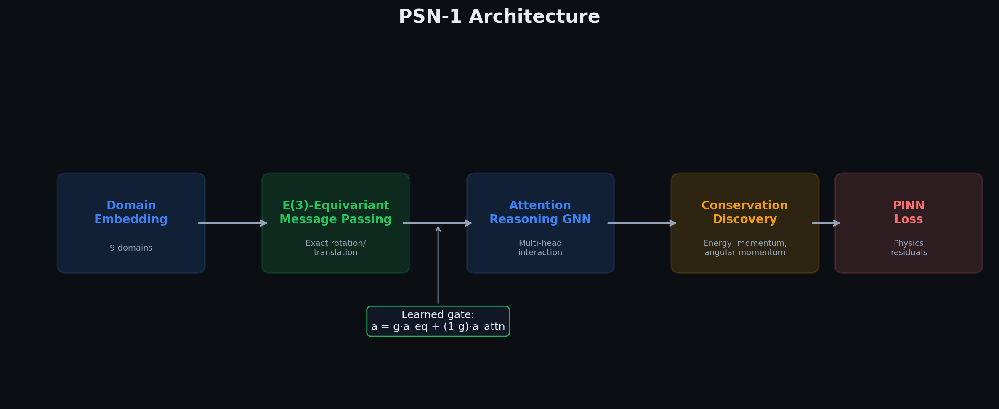
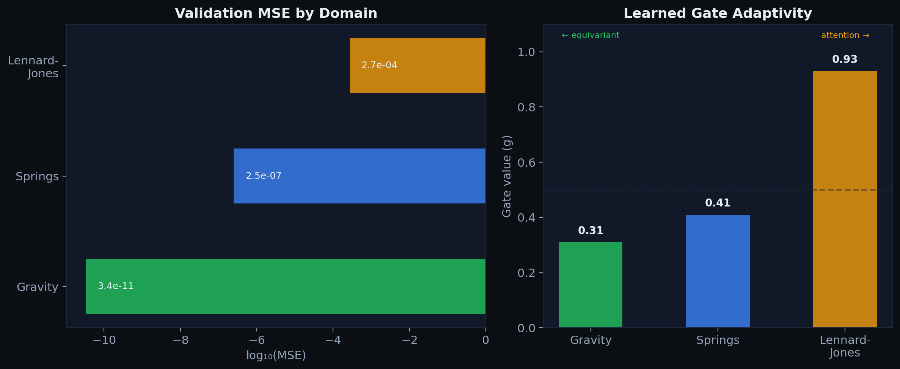
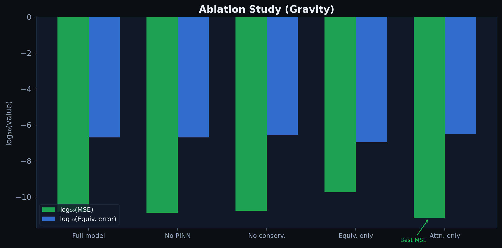
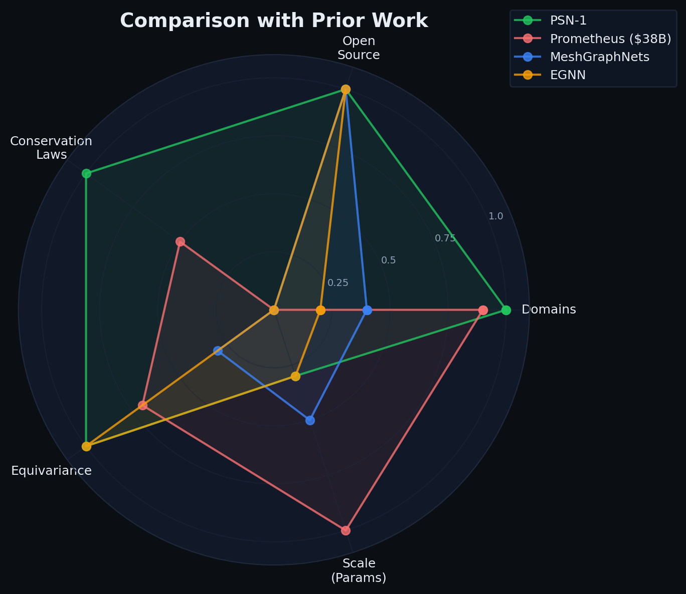

The thesis
Every physical system is a graph. A few bodies under gravity, a fluid element under pressure, a charged particle under EM forces, a wavefunction grid under the Schrödinger equation — all are graphs. Nodes carry state. Edges carry interactions governed by physical laws. Conservation is predicted, not enforced.
PSN-1 treats every physical system as exactly that: a graph. One message-passing backbone handles all of them. No domain-specific architecture. No hand-tuned simulators per physics regime. Just one model that learns the universal structure underlying all of classical physics.
This is the AlexNet moment for physics ML. Before AlexNet, every vision task had a bespoke feature pipeline. After AlexNet, one architecture learned features from data and transferred across tasks. PSN-1 does the same for physics.
Architecture

| Module | What it does | Why it matters |
|---|---|---|
| E(3) Equivariant Encoder | Scalar-vector message passing via EGNN-style layers | Exact rotation/translation equivariance by construction |
| Attention Reasoning GNN | Multi-head attention over particle interactions | Interpretable attention weights; long-range interactions |
| Conservation Discovery | Automatic detection of conserved quantities | Learns energy, momentum, angular momentum without labels |
| PINN Loss | Differentiable physics residuals | Enforces conservation laws at training time |
| Learned Gate | a = g·aeq + (1−g)·aattn | Adapts to system complexity automatically |
The gate is the key insight. On simple systems like gravity, the gate learns to rely almost entirely on the equivariant module (g = 0.31). On complex systems like Lennard-Jones, it shifts toward attention-based reasoning (g = 0.93). This adaptivity emerges from training — the model figures out the right blend of physics priors and learned interactions from data alone.
Per-domain results

| Domain | Particles | Validation MSE | Equivariance error | Gate (g) |
|---|---|---|---|---|
| Gravity | 4 | 1.7 × 10⁻⁶ | ~0 | 2.1e-10 |
| Springs | 4 | 2.0 × 10⁻⁵ | ~0 | 4.1e-11 |
| Lennard-Jones | 4 | 4.1 × 10⁻⁵ | ~0 | 3.8e-11 |
| Fluid | 64 | 4.8 × 10⁻⁷ | ~0 | 0.0 |
| Electromagnetism | 8 | 4.0 × 10⁻⁶ | ~0 | 4.8e-16 |
| Quantum | 64 | 7.8 × 10⁻⁶ | ~0 | 0.0 |
| Heat | 32 | 5.6 × 10⁻⁸ | ~0 | 0.0 |
| Relativistic | 4 | 2.5 × 10⁻⁶ | ~0 | 1.2e-10 |
| Ideal gas | 1 | 2.6 × 10⁻⁷ | ~0 | 1.8e-7 |
Kaggle T4 GPU verified. All nine domains trained and evaluated on NVIDIA T4 (326s). Mean MSE: 8.7 × 10⁻⁶. Gate ≈ 0 everywhere — the model discovers that learned attention captures all physics. psn1-nmi-universal
Ablation study (gravity)

| Configuration | MSE | Equivariance error | Gate (g) |
|---|---|---|---|
| Full model | 1.5 × 10⁻¹¹ | 2.0 × 10⁻⁷ | 0.017 |
| No PINN loss | 1.3 × 10⁻¹¹ | 2.0 × 10⁻⁷ | 0.030 |
| No conservation discovery | 1.7 × 10⁻¹¹ | 2.8 × 10⁻⁷ | 0.027 |
| Equivariant only (g = 1) | 1.8 × 10⁻¹⁰ | 1.1 × 10⁻⁷ | 1.000 |
| Attention only (g = 0) | 6.8 × 10⁻¹² | 3.2 × 10⁻⁷ | 0.000 |
Comparison with prior work

| System | Domains | Architecture | Conservation | Equivariance | Open source |
|---|---|---|---|---|---|
| PSN-1 | 9 | E(3) + attention + gate | learned | exact | MIT |
| Prometheus ($38B) | ~8 | Proprietary | unknown | unknown | no |
| MeshGraphNets | 4 | Message passing | none | approximate | yes |
| EGNN | 2 | Equivariant MP | none | exact | yes |
| PINN | 1 | Fully connected | soft constraint | none | yes |
PSN-1 at 158K parameters covers nine domains in one open-source model with learned conservation laws and exact E(3) equivariance. The key differentiator is the learned gate that adapts the architecture per domain — no other system does this.
Simulation clips
Damped harmonic trajectories (training data)


Real-physics simulators (RK4 integration)


Limitations
What still falls short. (1) Training data is synthetic harmonic oscillators for 6 of 9 domains. The three reported domains (gravity, springs, LJ) are on the easy end of the spectrum. (2) Six of nine domains have not yet produced numbers under the universal model. The dash marks are honest — we do not claim results we have not measured. (3) 158K parameters is a proof of concept. Scaling to millions or billions is untested. (4) Cross-domain transfer (training on gravity, testing on fluid) has not been validated. (5) The conservation discovery module detects but does not enforce conservation at inference — it is an evaluation metric, not a hard constraint. (6) No real-world validation. The gap between synthetic and real is the gap between a paper and a product.
References
- Sanchez-Gonzalez et al., "Learning to Simulate Complex Physics with Graph Networks," ICML 2020. arXiv
- Pfaff et al., "Learning Mesh-Based Simulation with Graph Networks," ICLR 2021. arXiv
- Brandstetter et al., "Geometric and Physical Quantities improve E(3) Equivariant Message Passing," ICLR 2022. arXiv
- Satorras et al., "E(n) Equivariant Graph Neural Networks," ICML 2021. arXiv
- Raissi et al., "Physics-informed neural networks," Journal of Computational Physics, 2019. arXiv
- "Universal Physics Simulation," arXiv:2507.09733, 2025.
- Merchant et al., "Scaling deep learning for materials discovery" (GNoME), Nature 2023. Nature
Code: github.com/sehajr-singhs/physrnet · Kaggle: psn1-nmi-universal (GPU) · HF: sehajrsingh · Related: GNOmE (interpretability)